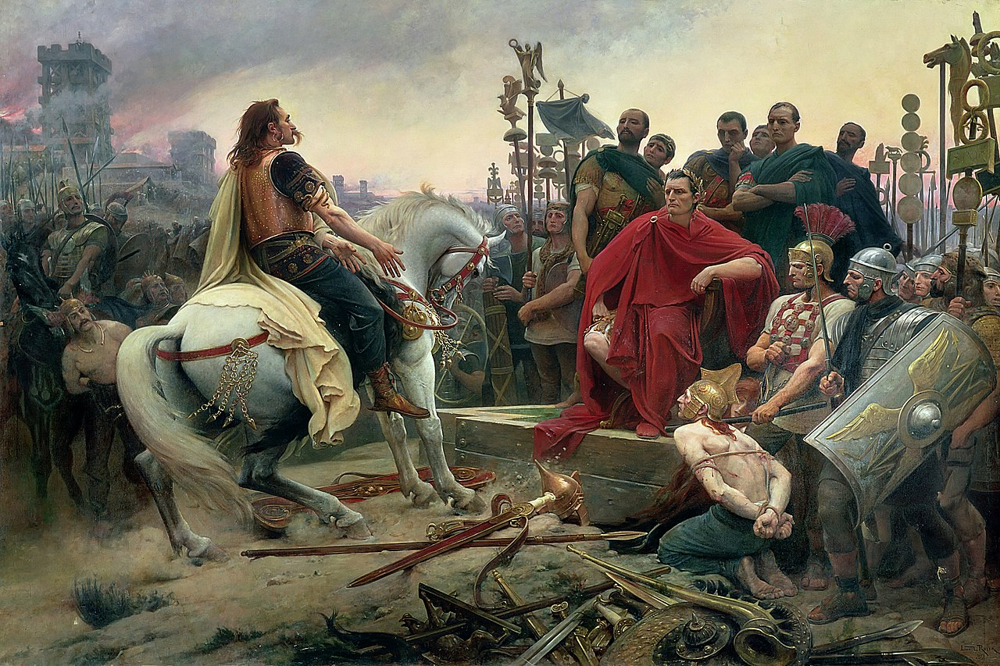

Ancient Rome
When you finish reading, test your knowledge and take the quiz!

Summary
In modern historiography, ancient Rome refers to Roman civilisation from the founding of the Italian city of Rome in the 8th century BC to the collapse of the Western Roman Empire in the 5th century AD. It encompasses the Roman Kingdom (753–509 BC), Roman Republic (509–27 BC), and Roman Empire (27 BC–476 AD) until the fall of the western empire. Ancient Rome began as an Italic settlement, traditionally dated to 753 BC, beside the River Tiber in the Italian Peninsula. The settlement grew into the city and polity of Rome, and came to control its neighbours through a combination of treaties and military strength. It eventually dominated the Italian Peninsula, assimilated the Greek culture of southern Italy (Magna Grecia) and the Etruscan culture and acquired an Empire that took in much of Europe and the lands and peoples surrounding the Mediterranean Sea. It was among the largest empires in the ancient world, with an estimated 50 to 90 million inhabitants, roughly 20% of the world's population at the time. It covered around 5 million square kilometres (1.9 million square miles) at its height in AD 117.
The Roman state evolved from an elective monarchy to a democratic classical republic and then to an increasingly autocratic semi-elective military dictatorship during the Empire. Through conquest, cultural, and linguistic assimilation, at its height it controlled the North African coast, Egypt, Southern Europe, and most of Western Europe, the Balkans, Crimea, and much of the Middle East, including Anatolia, Levant, and parts of Mesopotamia and Arabia. It is often grouped into classical antiquity together with ancient Greece, and their similar cultures and societies are known as the Greco-Roman world. Ancient Roman civilisation has contributed to modern language, religion, society, technology, law, politics, government, warfare, art, literature, architecture, and engineering. Rome professionalised and expanded its military and created a system of government called res publica, the inspiration for modern republics such as the United States and France. It achieved impressive technological and architectural feats, such as the empire-wide construction of aqueducts and roads, as well as more grandiose monuments and facilities.
Founding of Rome

Archaeological evidence of settlement around Rome starts to emerge c. 1000 BC. Agriculture in Italy had been prospering and settlements were beginning to develop, leading to the creation of city-states. The Romans themselves had a founding myth, in the mythical city of Alba Longa. When the king was overthrown, one of the princesses had to become a vestal virgin. She was raped and impregnated by the god Mars and she bore twin sons, Romulus and Remus. They were sentenced to death by King Amulius but were left in a basket floating down the River Tiber by a servant. They were rescued by a she-wolf, breastfed, and eventually raised by her. The three were discovered by a shepherd and grew up to be strong and intelligent leaders. They returned to Rome and discovered their lineage. They killed King Amulius and restored their grandfather as king. The twins set out to build their new city but could not decide what land to build on. After a dispute, Romulus killed Remus and became the sole founder of Rome in 753 BC.
Another legend, recorded by Greek historian Dionysius of Halicarnassus, says that Prince Aeneas led a group of Trojans on a sea voyage to found a new Troy after the Trojan War. They landed on the banks of the Tiber River and a woman travelling with them, Roma, torched their ships to prevent them leaving again. They named the settlement after her The Roman poet Virgil recounted this legend in his classical epic poem the Aeneid, where the Trojan prince Aeneas is destined by the gods to found a new Troy.
The Kingdom
In the earliest part of Roman history, the city and its territory were ruled by kings. The Roman Kingdom began from its founding and there were seven legendary kings who each had a major contribution to Rome. The first king Romulus founded Rome and established the Senate and the armies. The second king, Numa Pompilius established religious institutions and built many temples in Rome. The last king was Lucius Tarquinius Superbus who was deposed, as the Roman monarchy was overthrown and the Roman Republic was established. The king’s second son, Sextus Tarquinius had raped a noblewoman, Lucretia who revealed this assault to Roman noblemen and then killed herself. Led by Lucius Junius Brutus, the noblemen gathered the support of the people to expel the king and his family. With the support of the Roman army behind Brutus, the king was forced into exile. The Roman people thereafter despised kings and any abuse of absolute power or corruption. Evidence of Roman expansion is clear in the sixth century BC; by its end, Rome controlled a territory of some 780 square kilometres (300 square miles) with a population perhaps as high as 35,000. A palace, the Regia, was constructed c. 625 BC; the Romans attributed the creation of their first popular organisations and the Senate to the regal period as well. Rome also started to extend its control over its Latin neighbours. By the end of the 6th century, most of this area had become dominated by the Romans.
The Republic

By the end of the sixth century, Rome and many of its Italian neighbours entered a period of turbulence. Archaeological evidence implies some degree of large-scale warfare. According to tradition and later writers such as Livy, the Roman Republic was established c. 509 BC, when the last of the seven kings of Rome, Tarquin the Proud, was deposed and a system based on annually elected magistrates and various representative assemblies was established. A constitution set a series of checks and balances, and a separation of powers. The most important magistrates were the two consuls, who together exercised executive authority such as imperium, or military command. The consuls had to work with the Senate, which was initially an advisory council of the ranking nobility, or patricians, but grew in size and power. Other magistrates of the Republic include tribunes, quaestors, aediles, praetors and censors. The magistracies were originally restricted to patricians, but were later opened to common people, or plebeians. Republican voting assemblies included the comitia centuriata (centuriate assembly), which voted on matters of war and peace and elected men to the most important offices, and the comitia tributa (tribal assembly), which elected less important offices.
In the 4th century BC, Rome had come under attack by the Gauls, who now extended their power in the Italian peninsula beyond the Po Valley and through Etruria. On 16 July 390 BC, a Gallic army under the leadership of tribal chieftain Brennus, defeated the Romans at the Battle of the Allia and marched to Rome. The Gauls looted and burned the city, then laid siege to the Capitoline Hill, where some Romans had barricaded themselves, for seven months. The Gauls then agreed to give the Romans peace in exchange for 1000 pounds of gold. According to later legend, the Roman supervising the weighing noticed that the Gauls were using false scales. The Romans then took up arms and defeated the Gauls. Their victorious general Camillus remarked "With iron, not with gold, Rome buys her freedom." The Romans gradually subdued the other peoples on the Italian peninsula, including the Etruscans. The last threat to Roman hegemony in Italy came when Tarentum, a major Greek colony, enlisted the aid of Pyrrhus of Epirus in 281 BC, but this effort failed as well. The Romans secured their conquests by founding Roman colonies in strategic areas, thereby establishing stable control over the region.
The Punic Wars

In the 3rd century BC Rome faced a new and formidable opponent: Carthage, the other major power in the Western Mediterranean. The First Punic War began in 264 BC, when the city of Messana asked for Carthage's help in their conflicts with Hiero II of Syracuse. After the Carthaginian intercession, Messana asked Rome to expel the Carthaginians. Rome entered this war because Syracuse and Messana were too close to the newly conquered Greek cities of Southern Italy and Carthage was now able to make an offensive through Roman territory; along with this, Rome could extend its domain over Sicily. Carthage was a maritime power, and the Roman lack of ships and naval experience made the path to the victory a long and difficult one for the Roman Republic. Despite this, after more than 20 years of war, Rome defeated Carthage and a peace treaty was signed. Among the reasons for the Second Punic War was the subsequent war reparations Carthage acquiesced to at the end of the First Punic War.
The war began with the audacious invasion of Hispania by Hannibal, who marched through Hispania to the Italian Alps, causing panic among Rome's Italian allies. The best way found to defeat Hannibal's purpose of causing the Italians to abandon Rome was to delay the Carthaginians with a guerrilla war of attrition, a strategy propounded by Quintus Fabius Maximus Verrucosus. Hannibal's invasion lasted over 16 years, ravaging Italy, but ultimately Carthage was defeated in the decisive Battle of Zama in October 202 BC. More than a half century after these events, Carthage was humiliated and the Republic's focus now was only to the Hellenistic kingdoms of Greece and revolts in Hispania. However, Carthage, after having paid the war indemnity, felt that its commitments and submission to Rome had ceased, a vision not shared by the Roman Senate. The Third Punic War began when Rome declared war against Carthage in 149 BC. Carthage resisted well at the first strike but could not withstand the attack of Scipio Aemilianus, who entirely destroyed the city, enslaved all the citizens and gained control of that region, which became the province of Africa. All these wars resulted in Rome's first overseas conquests (Sicily, Hispania and Africa) and the rise of Rome as a significant imperial power.
The Late Republic
After defeating the Macedonian and Seleucid Empires in the 2nd century BC, the Romans became the dominant people of the Mediterranean Sea. The conquest of the Hellenistic kingdoms brought the Roman and Greek cultures in closer contact and the Roman elite, once rural, became cosmopolitan. At this time Rome was a consolidated empire—in the military view—and had no major enemies. Foreign dominance led to internal strife. Senators became rich at the provinces' expense; soldiers, who were mostly small-scale farmers, were away from home longer and could not maintain their land; and the increased reliance on foreign slaves and the growth of latifundia reduced the availability of paid work. Income from war booty, mercantilism in the new provinces, and tax farming created new economic opportunities for the wealthy, forming a new class of merchants, called the equestrians.
The lex Claudia forbade members of the Senate from engaging in commerce, so while the equestrians could theoretically join the Senate, they were severely restricted in political power. The Senate squabbled perpetually, repeatedly blocked important land reforms and refused to give the equestrian class a larger say in the government. Violent gangs of the urban unemployed, controlled by rival Senators, intimidated the electorate through violence. The situation came to a head in the late 2nd century BC under the Gracchi brothers, a pair of tribunes who attempted to pass land reform legislation that would redistribute the major patrician landholdings among the plebeians. Both brothers were killed and the Senate passed reforms reversing the Gracchi brother's actions. This led to the growing divide of the plebeian groups (populares) and equestrian classes (optimates).
Marius & Sulla

Gaius Marius soon become a leader of the Republic, holding the first of his seven consulships (an unprecedented number) in 107 BC by arguing that his former patron Quintus Caecilius Metellus Numidicus was not able to defeat and capture the Numidian king Jugurtha. Marius then started his military reform: in his recruitment to fight Jugurtha, he levied the very poor (an innovation), and many landless men entered the army. Marius was elected for five consecutive consulships from 104 to 100 BC, as Rome needed a military leader to defeat the Cimbri and the Teutones, who were threatening Rome. After Marius's retirement, Rome had a brief peace, during which the Italian socii ("allies" in Latin) requested Roman citizenship and voting rights. The reformist Marcus Livius Drusus supported their legal process but was assassinated, and the socii revolted against the Romans in the Social War. At one point both consuls were killed; Marius was appointed to command the army together with Lucius Julius Caesar and Lucius Cornelius Sulla.
By the end of the Social War, Marius and Sulla were the premier military men in Rome and their partisans were in conflict, both sides jostling for power. In 88 BC, Sulla was elected for his first consulship and his first assignment was to defeat Mithridates VI of Pontus, whose intentions were to conquer the Eastern part of the Roman territories. However, Marius's partisans managed his installation to the military command, defying Sulla and the Senate. To consolidate his own power, Sulla conducted a surprising and illegal action: he marched to Rome with his legions, killing all those who showed support to Marius's cause. In the following year, 87 BC, Marius, who had fled at Sulla's march, returned to Rome while Sulla was campaigning in Greece. He seized power along with the consul Lucius Cornelius Cinna and killed the other consul, Gnaeus Octavius, achieving his seventh consulship. Marius and Cinna revenged their partisans by conducting a massacre. Marius died in 86 BC, due to age and poor health, just a few months after seizing power. Cinna exercised absolute power until his death in 84 BC. After returning from his Eastern campaigns, Sulla had a free path to reestablish his own power. In 83 BC he made his second march in Rome and began a time of terror: thousands of nobles, knights and senators were executed. Sulla also held two dictatorships and one more consulship, which began the crisis and decline of Roman Republic.
Caesar & the First Triumvirate
In the mid-1st century BC, Roman politics were restless. Political divisions in Rome split into one of two groups, populares (who hoped for the support of the people) and optimates (the "best", who wanted to maintain exclusive aristocratic control). Sulla overthrew all populist leaders and his constitutional reforms removed powers (such as those of the tribune of the plebs) that had supported populist approaches. Meanwhile, social and economic stresses continued to build; Rome had become a metropolis with a super-rich aristocracy, debt-ridden aspirants, and a large proletariat often of impoverished farmers. The latter groups supported the Catilinarian conspiracy—a resounding failure since the consul Marcus Tullius Cicero quickly arrested and executed the main leaders. Following the civil war, Rome entered a period of tension between the Optimates and the Populares.
A man by the name of Gaius Julius Caesar rose from the scene. He came from a noble family (gens Julia) but supported the Populares. Julius gained the support of the urban poor and the plebeians, whom he often manipulated to threaten the Senate. He formed a three-man alliance between Pompey and Crassus, the two most powerful men in Rome. Crassus, the richest man in Rome, gave money to Caesar, and in return, he supported his campaigns as he was an eloquent orator. Pompey, a Roman general known for serving the dictator Sulla and rising to power through military victories, was elected consul multiple times. Together, the First Triumvirate effectively ruled over Rome as long as they could agree. Caesar obtained his first consulship and became commander of the army in Gaul. When Crassus invaded Parthia and was killed in battle, the alliance between Caesar and Pompey began to decline as he was their mediator. Cato the Younger swayed Pompey to join his side, and the two battled for power in Rome. Despite being outnumbered, Caesar sought to expand Roman territory in Gaul during the Gallic Wars. Eventually, Caesar successfully conquered Gaul, obtaining immense wealth, respect, popularity in Rome, and the loyalty of his battle-hardened legions. Pompey realized that Caesar was becoming too powerful and sought to strip him of his legions with the help of the Senate, ordering him back to Rome.

Caesar defied Senate orders by crossing the Rubicon and marching on Rome at the head of a legion. Invading Rome, he started a deadly civil war that ensued for four years. Caesar emerged victorious, destroying all the Optimate leaders, including Metellus Scipio, Cato the Younger, and Pompey's son. Pompey fled to Egypt, which was a Hellenistic kingdom controlled by dual rulers, Cleopatra VII and Ptolemy XIII. However, before Caesar's men could capture him, Pompey was assassinated by the advisors of King Ptolemy. Caesar became involved in the civil war in Egypt, defeating the Pharaoh's forces and establishing Cleopatra as the sole queen of Egypt. Caesar began a romantic affair with Cleopatra, who became pregnant with his son, Caesarion, which destabilized Caesar's reputation and power in Rome. Returning to Rome, Caesar became dictator and enacted a series of reforms that supported the Populares party but attracted the animosity of the Optimates. He declared himself as Dictator Perpetuo, and the Senate and Optimates became aware that he was becoming too powerful. Threatened and fearful of the way Rome's Republic was heading under Caesar, the Senate assassinated him on the Ides of March in 44 BC.
Octavian & the Second Triumvirate
Following the assassination of Julius Caesar, a civil war erupted in Rome between the Liberatores and the Caesarians. With no one to lead Rome, Caesar's friend Mark Antony became the ruler of the city until Caesar's adopted son and heir, Octavian, arrived in Rome. Along with Caesar's best friend, Marcus Aemilius Lepidus, the three formed the Second Triumvirate in 43 BC. This triumvirate aligned themselves with Caesar's faction and sought to defeat the Libertadores to avenge Caesar. In one year, the leaders of the Liberatores, Cassius and Brutus, who assisted in stabbing Caesar 23 times, were defeated in the Battle of Philippi. Hundreds of senators who supported the Liberatores were executed on the anniversary of the Ides of March.
The Triumvirate divided the Empire into three: Lepidus controlled Africa, Antony controlled the eastern provinces, and Octavian controlled Italia, Gaul, and Hispania. The relationship between the Triumvirate began to deteriorate, and following Lepidus' betrayal of Octavian, he was forced to retire. Mark Antony had lived in Ptolemaic Egypt, which was ruled by his lover Cleopatra VII. Antony's affair with her was an act of treason since she was the ruler of a foreign nation, and his lifestyle was becoming too extravagant and Hellenistic for a Roman statesman. Antony donated newly conquered eastern lands to his sons with Cleopatra and declared her the "Queen of Kings," prompting Octavian to go to war against Antony. Octavian annihilated Egyptian forces at the Battle of Actium in 31 BC, and the two lovers committed suicide in Egypt. Ptolemaic Egypt was conquered by Rome and was the last Hellenistic Kingdom to fall. However, the era of the Roman Empire had just begun (although Rome had been an empire since 146 BC when they sacked Carthage and conquered Greece at the Battle of Corinth).
Roman Empire
When you finish reading, test your knowledge and take the quiz!
Summary
The Roman Empire was the post-Republican state of ancient Rome. It included territory around the Mediterranean in Europe, North Africa, and Western Asia, and was ruled by emperors. The adoption of Christianity as the state church in 380 and the fall of the Western Roman Empire conventionally marks the end of classical antiquity and the beginning of the Middle Ages. The Roman Republic became severely destabilized in civil wars and political conflicts, eventually culminating in the victory of Octavian over Mark Antony and Cleopatra at the Battle of Actium in 31 BC and the subsequent conquest of the Ptolemaic Kingdom in Egypt. The Roman Senate granted Octavian overarching power (imperium) and the new title of Augustus, marking his accession as the first Roman emperor of a monarchy with Italia as the metropole and Rome as its sole capital. The vast Roman territories were organized in senatorial and imperial provinces.
The first two centuries of the Empire saw a period of unprecedented stability and prosperity known as the Pax Romana (Roman Peace). Rome reached its greatest territorial expanse under Trajan (AD 98–117); a period of increasing trouble and decline began under Commodus (180–192). In the 3rd century, the Empire underwent a crisis that threatened its existence, as the Gallic and Palmyrene Empires broke away from the Roman state, and a series of short-lived emperors led the Empire. It was reunified under Aurelian (r. 270–275). To stabilize it, Diocletian set up two different imperial courts in the Greek East and Latin West in 286; Christians rose to power in the 4th century following the Edict of Milan. The imperial seat moved from Rome to Byzantium in 330. The Migration Period, involving large invasions by Germanic peoples and by the Huns of Attila, led to the decline of the Western Roman Empire. With the fall of Ravenna to the Germanic Herulians and the deposition of Romulus Augustus in 476 by Odoacer, the Western Roman Empire finally collapsed. The Eastern Roman Empire survived for another millennium with Constantinople as sole capital, until the city's fall in 1453.
Due to the Empire's extent and endurance, its institutions and culture had a lasting influence on the development of language, religion, art, architecture, literature, philosophy, law, and forms of government in its territories. Latin evolved into the Romance languages, while Medieval Greek became the language of the East. The Empire's adoption of Christianity led to the formation of medieval Christendom. Roman and Greek art had a profound impact on the Italian Renaissance. Rome's architectural tradition served as the basis for Romanesque, Renaissance and Neoclassical architecture, and also influenced Islamic architecture. The rediscovery of classical science and technology (which also formed the basis for Islamic science) in medieval Europe led to the Scientific Renaissance and Scientific Revolution. Roman law has its descendants in many modern legal systems, such as the Napoleonic Code, while Rome's republican institutions have left an enduring legacy, influencing the Italian city-state republics of the medieval period, as well as the early United States and other modern democratic republics.
The Principate

In 27 BC and at the age of 36, Octavian was the sole Roman leader. In that year, he took the name Augustus. That event is usually taken by historians as the beginning of Roman Empire—although Rome was an "imperial" state since 146 BC, when Carthage was razed by Scipio Aemilianus and Greece was conquered by Lucius Mummius. Officially, the government was republican, but Augustus assumed absolute powers. His reform of the government brought about a two-century period colloquially referred to by Romans as the Pax Romana. The Julio-Claudian dynasty was established by Augustus. The emperors of this dynasty were Augustus, Tiberius, Caligula, Claudius and Nero. The Julio-Claudians started the destruction of republican values, but on the other hand, they boosted Rome's status as the central power in the Mediterranean region. While Caligula and Nero are usually remembered in popular culture as dysfunctional emperors, Augustus and Claudius are remembered as successful in politics and the military. This dynasty instituted imperial tradition in Rome and frustrated any attempt to reestablish a Republic.
Augustus (r. 27 BC – AD 14) gathered almost all the republican powers under his official title, princeps. He also diminished the political influence of the senatorial class by boosting the equestrian class. The senators lost their right to rule certain provinces, like Egypt, since the governor of that province was directly nominated by the emperor. The creation of the Praetorian Guard and his reforms in the military, creating a standing army with a fixed size of 28 legions, ensured his total control over the army. Compared with the Second Triumvirate's epoch, Augustus' reign as princeps was very peaceful, which led the people and the nobles of Rome to support Augustus, increasing his strength in political affairs. His generals were responsible for the field command; gaining such commanders as Marcus Vipsanius Agrippa, Nero Claudius Drusus and Germanicus much respect from the populace and the legions. Augustus intended to extend the Roman Empire to the whole known world, and in his reign, Rome conquered Cantabria, Aquitania, Raetia, Dalmatia, Illyricum and Pannonia. Under Augustus' reign, Roman literature grew steadily in what is known as the Golden Age of Latin Literature. Poets like Virgil, Horace, Ovid and Rufus developed a rich literature, and were close friends of Augustus. Along with Maecenas, he sponsored patriotic poems, as Virgil's epic Aeneid and also historiographical works, like those of Livy. Augustus also continued the changes to the calendar promoted by Caesar, and the month of August is named after him. Augustus brought a peaceful and thriving era to Rome, known as Pax Augusta or Pax Romana. Augustus died in 14 AD, but the empire's glory continued after his era.
Julio-Claudian Dynasty
The Julio-Claudians continued to rule Rome after Augustus' death and remained in power until the death of Nero in 68 AD. Influenced by his wife, Livia Drusilla, Augustus appointed her son from another marriage, Tiberius, as his heir. The Senate agreed with the succession, and granted to Tiberius the same titles and honours once granted to Augustus: the title of princeps and Pater patriae, and the Civic Crown. However, Tiberius was not an enthusiast for political affairs: after agreement with the Senate, he retired to Capri in 26 AD, and left control of the city of Rome in the hands of the praetorian prefect Sejanus (until 31 AD) and Macro (from 31 to 37 AD). Tiberius died (or was killed) in 37 AD. The male line of the Julio-Claudians was limited to Tiberius' nephew Claudius, his grandson Tiberius Gemellus and his grand-nephew Caligula. As Gemellus was still a child, Caligula was chosen to rule the empire. He was a popular leader in the first half of his reign, but became a crude and insane tyrant in his years controlling government. The Praetorian Guard murdered Caligula four years after the death of Tiberius, and, with belated support from the senators, proclaimed his uncle Claudius as the new emperor. Claudius was not as authoritarian as Tiberius and Caligula. Claudius conquered Lycia and Thrace; his most important deed was the beginning of the conquest of Britannia. Claudius was poisoned by his wife, Agrippina the Younger in 54 AD. His heir was Nero, son of Agrippina and her former husband, since Claudius' son Britannicus had not reached manhood upon his father's death.
Nero sent his general, Suetonius Paulinus, to invade modern-day Wales, where he encountered stiff resistance. The Celts there were independent, tough and resistant to tax collectors and fought Paulinus, as he battled his way across from east to west. It took him a long time to reach the north west coast, and in 60 AD he finally crossed the Menai Strait to the sacred island of Mona (Anglesey), the last stronghold of the druids. His soldiers attacked the island and massacred the druids: men, women and children, destroyed the shrine and the sacred groves and threw many of the sacred standing stones into the sea. While Paulinus and his troops were massacring druids in Mona, the tribes of modern-day East Anglia staged a revolt led by queen Boadicea of the Iceni. The rebels sacked and burned Camulodunum, Londinium and Verulamium (modern-day Colchester, London and St Albans respectively) before they were crushed by Paulinus. Boadicea, like Cleopatra before her, committed suicide to avoid the disgrace of being paraded in triumph in Rome. Nero is widely known as the first persecutor of Christians and for the Great Fire of Rome, rumoured to have been started by the emperor himself. A conspiracy against Nero in 65 AD under Calpurnius Piso failed, but in 68 AD the armies under Julius Vindex in Gaul and Servius Sulpicius Galba in modern-day Spain revolted. Deserted by the Praetorian Guards and condemned to death by the senate, Nero killed himself.
Flavian Dynasty

The Flavians were the second dynasty to rule Rome. By 68 AD, the year of Nero's death, there was no chance of a return to the Roman Republic, and so a new emperor had to arise. After the turmoil in the Year of the Four Emperors, Titus Flavius Vespasianus (anglicised as Vespasian) took control of the empire and established a new dynasty. Under the Flavians, Rome continued its expansion, and the state remained secure. Under Trajan, the Roman Empire reached the peak of its territorial expansion. Rome's dominion now spanned 5.0 million square kilometres (1.9 million square miles). The most significant military campaign undertaken during the Flavian period was the siege and destruction of Jerusalem in 70 AD by Titus. The destruction of the city was the culmination of the Roman campaign in Judea following the Jewish uprising of 66 AD. The Second Temple was completely demolished, after which Titus' soldiers proclaimed him imperator in honour of the victory. Jerusalem was sacked and much of the population killed or dispersed. Josephus claims that 1,100,000 people were killed during the siege, of whom a majority were Jewish. 97,000 were captured and enslaved, including Simon bar Giora and John of Giscala. Many fled to areas around the Mediterranean.
Vespasian had been a general under Claudius and Nero. He fought as a commander in the First Jewish-Roman War along with his son Titus. Following the turmoil of the Year of the Four Emperors, in 69 AD, four emperors were enthroned in turn: Galba, Otho, Vitellius, and, lastly, Vespasian, who crushed Vitellius' forces and became emperor. He reconstructed many buildings which were uncompleted, like a statue of Apollo and the temple of Divus Claudius ("the deified Claudius"), both initiated by Nero. Buildings destroyed by the Great Fire of Rome were rebuilt, and he revitalised the Capitol. Vespasian also started the construction of the Flavian Amphitheater, more commonly known as the Colosseum. The historians Josephus and Pliny the Elder wrote their works during Vespasian's reign. Vespasian was Josephus' sponsor and Pliny dedicated his Naturalis Historia to Titus, son of Vespasian. Vespasian sent legions to defend the eastern frontier in Cappadocia, extended the occupation in Britannia (modern-day England, Wales and southern Scotland) and reformed the tax system. He died in 79 AD. Titus became emperor in 79. He finished the Flavian Amphitheater, using war spoils from the First Jewish-Roman War, and hosted victory games that lasted for a hundred days. These games included gladiatorial combats, horse races and a sensational mock naval battle on the flooded grounds of the Colosseum. Titus died of fever in 81 AD, and was succeeded by his brother Domitian. As emperor, Domitian showed the characteristics of a tyrant. He ruled for fifteen years, during which time he acquired a reputation for self-promotion as a living god. He constructed at least two temples in honour of Jupiter, the supreme deity in Roman religion. He was murdered following a plot within his own household.
Nerva–Antonine Dynasty
Following Domitian's murder, the Senate rapidly appointed Nerva as Emperor. Nerva had noble ancestry, and he had served as an advisor to Nero and the Flavians. His rule restored many of the traditional liberties of Rome's upper classes, which Domitian had over-ridden. The Nerva–Antonine dynasty from 96 AD to 192 AD included the "five good emperors" Nerva, Trajan, Hadrian, Antoninus Pius and Marcus Aurelius; and ended with Commodus. Nerva abdicated and died in 98 AD, and was succeeded by the general Trajan. Trajan is credited with the restoration of traditional privileges and rights of commoner and senatorial classes, which later Roman historians claim to have been eroded during Domitian's autocracy. Trajan fought three Dacian wars, winning territories roughly equivalent to modern-day Romania and Moldova. He undertook an ambitious public building program in Rome, including Trajan's Forum, Trajan's Market and Trajan's Column, with the architect Apollodorus of Damascus. He also remodelled the Pantheon and extended the Circus Maximus. When Parthia appointed a king for Armenia without consulting Rome, Trajan declared war on Parthia and deposed the king of Armenia. In 115 he took the Northern Mesopotamian cities of Nisibis and Batnae, organised a province of Mesopotamia (116), and issued coins that claimed Armenia and Mesopotamia were under the authority of the Roman people. In that same year, he captured Seleucia and the Parthian capital Ctesiphon (near modern Baghdad). After defeating a Parthian revolt and a Jewish revolt, he withdrew due to health issues, and in 117, he died of edema.
Many Romans emigrated to Hispania (modern-day Spain and Portugal) and stayed for generations, in some cases intermarrying with Iberians; one of these families produced the emperor Hadrian. Hadrian withdrew all the troops stationed in Parthia, Armenia and Mesopotamia (modern-day Iraq), abandoning Trajan's conquests. Hadrian's army crushed a revolt in Mauretania and the Bar Kokhba revolt in Judea. This was the last large-scale Jewish revolt against the Romans, and was suppressed with massive repercussions in Judea. Hundreds of thousands of Jews were killed. Hadrian renamed the province of Judea "Provincia Syria Palaestina," after one of Judea's most hated enemies. He constructed fortifications and walls, like the celebrated Hadrian's Wall which separated Roman Britannia and the tribes of modern-day Scotland. Hadrian promoted culture, especially the Greek. He also forbade torture and humanised the laws. His many building projects included aqueducts, baths, libraries and theatres; additionally, he travelled nearly every province in the Empire to check the military and infrastructural conditions. Following Hadrian's death in 138 AD, his successor Antoninus Pius built temples, theatres, and mausoleums, promoted the arts and sciences, and bestowed honours and financial rewards upon the teachers of rhetoric and philosophy. On becoming emperor, Antoninus made few initial changes, leaving intact as far as possible the arrangements instituted by his predecessor. Antoninus expanded Roman Britannia by invading what is now southern Scotland and building the Antonine Wall. He also continued Hadrian's policy of humanising the laws. He died in 161 AD.
Marcus Aurelius, known as the Philosopher, was the last of the Five Good Emperors. He was a stoic philosopher and wrote the Meditations. He defeated barbarian tribes in the Marcomannic Wars as well as the Parthian Empire. His co-emperor, Lucius Verus, died in 169 AD, probably from the Antonine Plague, a pandemic that killed nearly five million people through the Empire in 165–180 AD. From Nerva to Marcus Aurelius, the empire achieved an unprecedented status. The powerful influence of laws and manners had gradually cemented the union of the provinces. All the citizens enjoyed and abused the advantages of wealth. The image of a free constitution was preserved with decent reverence. The Roman senate appeared to possess the sovereign authority, and devolved on the emperors all the executive powers of government. Gibbon declared the rule of these "Five Good Emperors" the golden era of the Empire. During this time, Rome reached its greatest territorial extent. Commodus, son of Marcus Aurelius, became emperor after his father's death. He is not counted as one of the Five Good Emperors, due to his direct kinship with the latter emperor; in addition, he was militarily passive. Cassius Dio identifies his reign as the beginning of Roman decadence: "(Rome has transformed) from a kingdom of gold to one of iron and rust."
Severan Dynasty
Commodus was killed by a conspiracy involving Quintus Aemilius Laetus and his wife Marcia in late 192 AD. The following year is known as the Year of the Five Emperors, during which Helvius Pertinax, Didius Julianus, Pescennius Niger, Clodius Albinus and Septimius Severus held the imperial dignity. Pertinax, a member of the senate who had been one of Marcus Aurelius's right-hand men, was the choice of Laetus, and he ruled vigorously and judiciously. Laetus soon became jealous and instigated Pertinax's murder by the Praetorian Guard, who then auctioned the empire to the highest bidder, Didius Julianus, for 25,000 sesterces per man. The people of Rome were appalled and appealed to the frontier legions to save them. The legions of three frontier provinces—Britannia, Pannonia Superior, and Syria—resented being excluded from the "donative" and replied by declaring their individual generals to be emperor. Lucius Septimius Severus Geta, the Pannonian commander, bribed the opposing forces, pardoned the Praetorian Guards and installed himself as emperor. He and his successors governed with the legions' support. The changes on coinage and military expenditures were the root of the financial crisis that marked the Crisis of the Third Century.
Severus was enthroned after invading Rome and having Didius Julianus killed. Severus attempted to revive totalitarianism and, addressing the Roman people and Senate, praised the severity and cruelty of Marius and Sulla, which worried the senators. When Parthia invaded Roman territory, Severus successfully waged war against that country. Notwithstanding this military success, Severus failed in invading Hatra, a rich Arabian city. Severus killed his legate, who was gaining respect from the legions; and his soldiers fell victim to famine. After this disastrous campaign, he withdrew. Severus also intended to vanquish the whole of Britannia. To achieve this, he waged war against the Caledonians. After many casualties in the army due to the terrain and the barbarians' ambushes, Severus himself went to the field. However, he became ill and died in 211 AD, at the age of 65.
Upon the death of Severus, his sons Caracalla and Geta were made emperors. Caracalla had his brother, a youth, assassinated in his mother's arms, and may have murdered 20,000 of Geta's followers. Like his father, Caracalla was warlike. He continued Severus' policy and gained respect from the legions. Knowing that the citizens of Alexandria disliked him and were denigrating his character, Caracalla served a banquet for its notable citizens, after which his soldiers killed all the guests. From the security of the temple of Sarapis, he then directed an indiscriminate slaughter of Alexandria's people. In 212, he issued the Edict of Caracalla, giving full Roman citizenship to all free men living in the Empire, with the exception of the dediticii, people who had become subject to Rome through surrender in war, and freed slaves.
Macrinus conspired to have Caracalla assassinated by one of his soldiers during a pilgrimage to the Temple of the Moon in Carrhae, in 217 AD. The incompetent Macrinus assumed power, but soon removed himself from Rome to the east and Antioch. His brief reign ended in 218, when the youngster Bassianus, high priest of the temple of the Sun at Emesa, and supposedly illegitimate son of Caracalla, was declared Emperor by the disaffected soldiers of Macrinus. He adopted the name of Antoninus but history has named him after his Sun god Elagabalus, represented on Earth in the form of a large black stone. An incompetent and lascivious ruler, Elagabalus offended all but his favourites. Cassius Dio, Herodian and the Historia Augusta give many accounts of his notorious extravagance. Elagabalus adopted his cousin Severus Alexander, as Caesar, but subsequently grew jealous and attempted to assassinate him. However, the Praetorian guard preferred Alexander, murdered Elagabalus, dragged his mutilated corpse through the streets of Rome, and threw it into the Tiber. Severus Alexander then succeeded him. Alexander waged war against many foes, including the revitalised Persia and also the Germanic peoples, who invaded Gaul. His losses generated dissatisfaction among his soldiers, and some of them murdered him during his Germanic campaign in 235 AD.
Crisis of the Third Century
A disastrous scenario emerged after the death of Alexander Severus: the Roman state was plagued by civil wars, external invasions, political chaos, pandemics and economic depression. The old Roman values had fallen, and Mithraism and Christianity had begun to spread through the populace. Emperors were no longer men linked with nobility; they usually were born in lower-classes of distant parts of the Empire. These men rose to prominence through military ranks, and became emperors through civil wars. There were 26 emperors in a 49-year period, a signal of political instability. Maximinus Thrax was the first ruler of that time, governing for just three years. Others ruled just for a few months, like Gordian I, Gordian II, Balbinus and Hostilian.
he population and the frontiers were abandoned, since the emperors were mostly concerned with defeating rivals and establishing their power. The economy also suffered: massive military expenditures from the Severi caused a devaluation of Roman coins. Hyperinflation came at this time as well. The Plague of Cyprian broke out in 250 and killed a huge portion of the population. In 260 AD, the provinces of Syria Palaestina, Asia Minor and Egypt separated from the rest of the Roman state to form the Palmyrene Empire, ruled by Queen Zenobia and centered on Palmyra. In that same year the Gallic Empire was created by Postumus, retaining Britannia and Gaul. These countries separated from Rome after the capture of emperor Valerian by the Sassanids of Persia, the first Roman ruler to be captured by his enemies; it was a humiliating fact for the Romans. The crisis began to recede during the reigns of Claudius Gothicus (268–270), who defeated the Gothic invaders, and Aurelian (271–275), who reconquered both the Gallic and Palmyrene Empires. The crisis was overcome during the reign of Diocletian.
The Tetrarchy
In 284 AD, Diocletian was hailed as Imperator by the eastern army. Diocletian healed the empire from the crisis, by political and economic shifts. A new form of government was established: the Tetrarchy. The Empire was divided among four emperors, two in the West and two in the East. The first tetrarchs were Diocletian (in the East), Maximian (in the West), and two junior emperors, Galerius (in the East) and Flavius Constantius (in the West). To adjust the economy, Diocletian made several tax reforms. Diocletian expelled the Persians who plundered Syria and conquered some barbarian tribes with Maximian. He adopted many behaviours of Eastern monarchs. Anyone in the presence of the emperor had now to prostrate himself—a common act in the East, but never practised in Rome before. Diocletian did not use a disguised form of Republic, as the other emperors since Augustus had done. Between 290 and 330, half a dozen new capitals had been established by the members of the Tetrarchy, officially or not: Antioch, Nicomedia, Thessalonike, Sirmium, Milan, and Trier. Diocletian was also responsible for a significant Christian persecution. In 303 he and Galerius started the persecution and ordered the destruction of all the Christian churches and scripts and forbade Christian worship. Diocletian abdicated in 305 AD together with Maximian, thus, he was the first Roman emperor to resign. His reign ended the traditional form of imperial rule, the Principate (from princeps) and started the Tetrarchy.
Constantine & Christianity
Constantine assumed the empire as a tetrarch in 306. He conducted many wars against the other tetrarchs. Firstly he defeated Maxentius in 312. In 313, he issued the Edict of Milan, which granted liberty for Christians to profess their religion. Constantine was converted to Christianity, enforcing the Christian faith. He began the Christianization of the Empire and of Europe—a process concluded by the Catholic Church in the Middle Ages. He was defeated by the Franks and the Alamanni during 306–308. In 324 he defeated another tetrarch, Licinius, and controlled all the empire, as it was before Diocletian. To celebrate his victories and Christianity's relevance, he rebuilt Byzantium and renamed it Nova Roma ("New Rome"); but the city soon gained the informal name of Constantinople ("City of Constantine"). The reign of Julian, who under the influence of his adviser Mardonius attempted to restore Classical Roman and Hellenistic religion, only briefly interrupted the succession of Christian emperors. Constantinople served as a new capital for the Empire. In fact, Rome had lost its central importance since the Crisis of the Third Century—Mediolanum was the western capital from 286 to 330, until the reign of Honorius, when Ravenna was made capital, in the 5th century. Constantine's administrative and monetary reforms, that reunited the Empire under one emperor, and rebuilt the city of Byzantium changed the high period of the ancient world.
Fall of the Western Roman Empire

In the late 4th and 5th centuries the Western Empire entered a critical stage which terminated with the fall of the Western Roman Empire. Under the last emperors of the Constantinian dynasty and the Valentinianic dynasty, Rome lost decisive battles against the Sasanian Empire and Germanic barbarians: in 363, emperor Julian the Apostate was killed in the Battle of Samarra, against the Persians and the Battle of Adrianople cost the life of emperor Valens (364–378); the victorious Goths were never expelled from the Empire nor assimilated. The next emperor, Theodosius I (379–395), gave even more force to the Christian faith, and after his death, the Empire was divided into the Eastern Roman Empire, ruled by Arcadius and the Western Roman Empire, commanded by Honorius, both of which were Theodosius' sons.
The situation became more critical in 408, after the death of Stilicho, a general who tried to reunite the Empire and repel barbarian invasion in the early years of the 5th century. The professional field army collapsed. In 410, the Theodosian dynasty saw the Visigoths sack Rome. During the 5th century, the Western Empire experienced a significant reduction of its territory. The Vandals conquered North Africa, the Visigoths claimed the southern part of Gaul, Gallaecia was taken by the Suebi, Britannia was abandoned by the central government, and the Empire suffered further from the invasions of Attila, chief of the Huns. General Orestes refused to meet the demands of the barbarian "allies" who now formed the army, and tried to expel them from Italy. Unhappy with this, their chieftain Odoacer defeated and killed Orestes, invaded Ravenna and dethroned Romulus Augustus, son of Orestes. This event of 476, usually marks the end of Classical antiquity and beginning of the Middle Ages. The Roman noble and former emperor Julius Nepos continued to rule as emperor from Dalmatia even after the deposition of Romulus Augustus until his death in 480. Some historians consider him to be the last emperor of the Western Empire instead of Romulus Augustus.
After some 1200 years of independence and nearly 700 years as a great power, the rule of Rome in the West ended. Various reasons for Rome's fall have been proposed ever since, including loss of Republicanism, moral decay, military tyranny, class war, slavery, economic stagnation, environmental change, disease, the decline of the Roman race, as well as the inevitable ebb and flow that all civilisations experience. The Eastern Empire survived for almost 1000 years after the fall of its Western counterpart and became the most stable Christian realm during the Middle Ages. During the 6th century, Justinian reconquered the Italian peninsula from the Ostrogoths, North Africa from the Vandals, and southern Hispania from the Visigoths. But within a few years of Justinian's death, Byzantine possessions in Italy were greatly reduced by the Lombards who settled in the peninsula. In the east, partially due to the weakening effect of the Plague of Justinian, the Byzantines were threatened by the rise of Islam. Its followers rapidly brought about the conquest of the Levant, the conquest of Armenia and the conquest of Egypt during the Arab–Byzantine wars, and soon presented a direct threat to Constantinople. In the following century, the Arabs also captured southern Italy and Sicily. On the west, Slavic populations were also able to penetrate deep into the Balkans.
The Byzantines, however, managed to stop further Islamic expansion into their lands during the 8th century and, beginning in the 9th century, reclaimed parts of the conquered lands. In 1000 AD, the Eastern Empire was at its height: Basil II reconquered Bulgaria and Armenia, and culture and trade flourished. However, soon after, this expansion was abruptly stopped in 1071 with the Byzantine defeat in the Battle of Manzikert. The aftermath of this battle sent the empire into a protracted period of decline. Two decades of internal strife and Turkic invasions ultimately led Emperor Alexios I Komnenos to send a call for help to the Western European kingdoms in 1095. The West responded with the Crusades, eventually resulting in the Sack of Constantinople by participants of the Fourth Crusade. The conquest of Constantinople in 1204 fragmented what remained of the Empire into successor states; the ultimate victor was the Empire of Nicaea. After the recapture of Constantinople by Imperial forces, the Empire was little more than a Greek state confined to the Aegean coast. The Byzantine Empire collapsed when Mehmed the Conqueror conquered Constantinople on 29 May 1453.